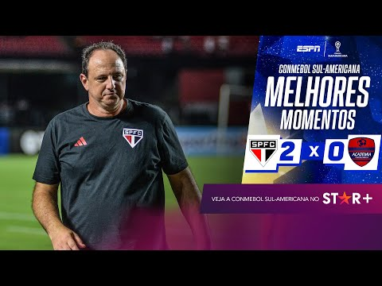
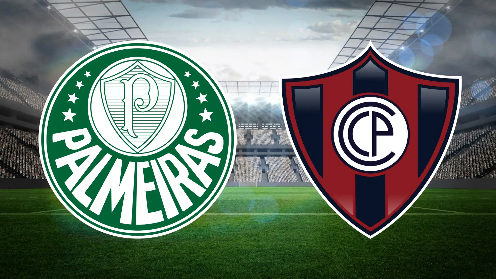

São Paulo
Depois da derrota para o botafogo na estreia do brasileirão no sabado (15/04) o tecnico do São paulo (Rogério Ceni) Corria o risco de demissão do clube, o tricolor infrentou o Academia Puerto Cabello(VEN) no morumbi, o tricolor só conseguiu balançar as redes aos 85 minutos de jogo, com a vitoria apertada no fim, rogério ceni ainda continuará treinando o clube tricolor.
Palmeiras
Depois de estrear com derrota na libertadores contra o Bolivar(BOL) o time paulista enfrentará dessa vez o Cerro Porteño(PAR) em casa, o Palmeiras é o ultimo colocado de seu grupo (Grupo C), o Palmeiras enfrentou o bolivar com o time reserva por que estava focado na final do paulistão, pois o time alviverde tinha perdido o primeiro jogo por 2X1 Contra o Água Santa fora de casa, depois do titulo paulista, o palmeiras esta 100% focado na libertadores e tentará buscar a primeira vitória diante do time Paraguaio.
Santos

Depois de estrear com derrota no Brasileirão contra o Grêmio fora de casa, o santos tentará se recupecuperar na Sul-Americana contra o Audax-Italiano(CHI) Na Vila Belmiro, o time paulista tera 8 disfalques no jogo de Quinta-feira por motivos de lesão e jogadores não relacionados, o Peixe está mais focado na Sul-Americana e Na Copa do Brasil, o técnico do Santos (Odair Hellmann) entrou com o time misto contra o Grêmio pois esta mais focado no jogo contra o time Chileno pra reassumir a liderança de seu Grupo (Grupo E).